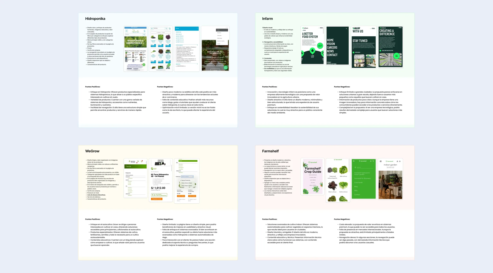
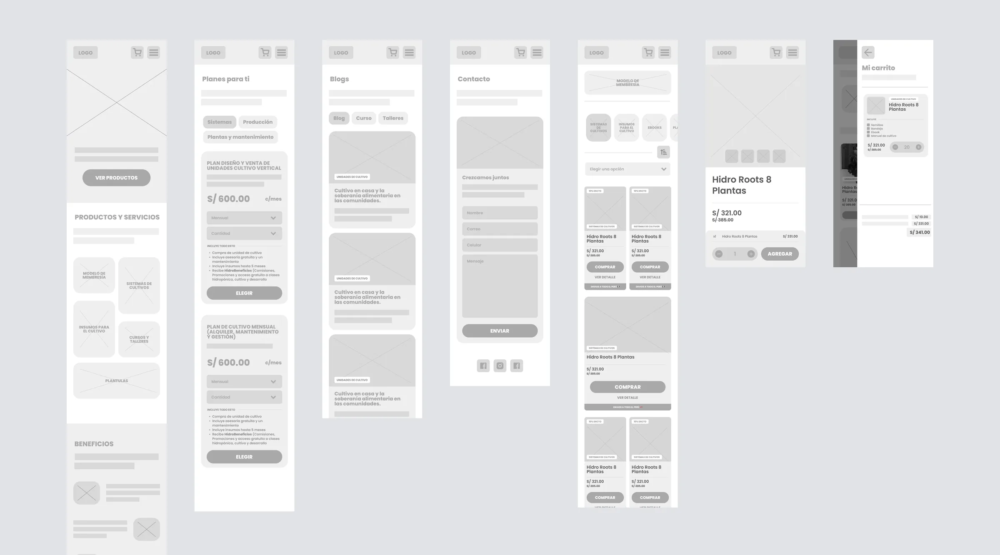
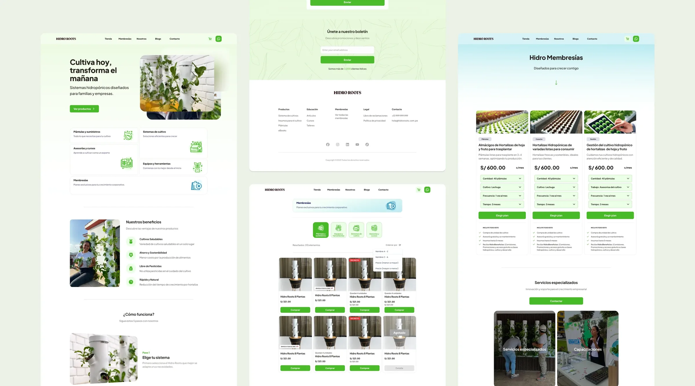
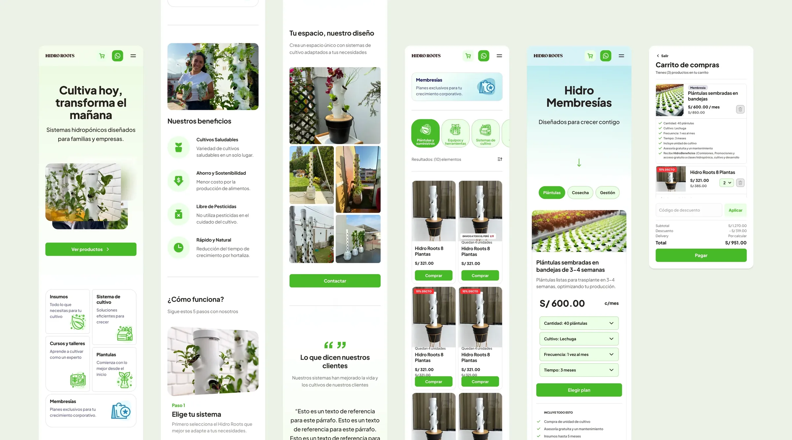

Responsive Web for HidroRoots
Responsive website for HidroRoots, a Peruvian company selling hydroponic systems for families and businesses, designed to communicate sustainability, freshness and simplicity.
 Live
Livesite
The project
I designed the UX/UI for HidroRoots, a Peruvian company that sells hydroponic systems for families and businesses. The goal was a website that communicates sustainability, freshness and simplicity. It had to help people understand the benefits of hydroponic growing and guide them through the product catalog.
The process went from competitive research and wireframes to the high-fidelity UI, with a few Lottie animations on top.
Benchmark
I started with a competitive benchmark, looking at how other hydroponics and sustainability brands present their products, organize their catalogs and build trust. It showed which patterns to adopt and which gaps HidroRoots could fill.

Benchmark: competitive researchWireframes
Low-fidelity wireframes defined the information architecture and the flow of the homepage, from the hero and value proposition to the product catalog and conversion. Hierarchy and layout were settled here, before any visual styling.

Wireframes: structure and flowFinal design, desktop
The desktop UI brings the brand into a fresh, natural look: plenty of whitespace, organic imagery and clear calls to action, with subtle Lottie motion.

Final UI, desktopFinal design, mobile
The mobile layout keeps the same hierarchy and reorganizes the catalog and navigation for small screens, so the experience stays light and fast.

Final UI, mobileMore projects.
Previous and next in the order of the home page.
TasteMakers / Anthropic
Design prompt engineering: I turn UI structures into structured prompts so AI models can rebuild layouts accurately.
 Now
Nowactive
Progresol Plus
A B2B app that connects hardware sellers with retailers across Perú, on iOS and Android.
 On the
On thestores